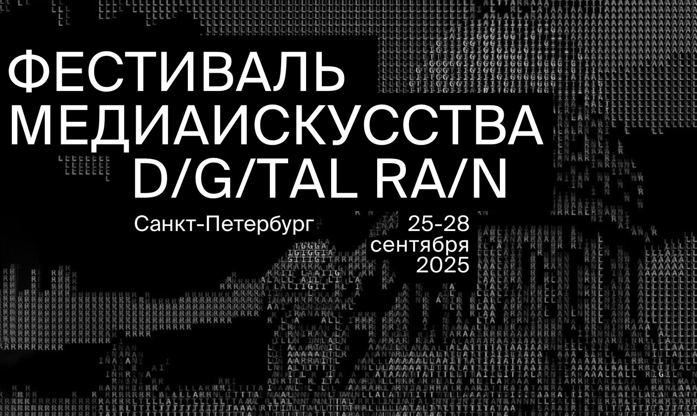

Projection mappingВидеомэппинг
synesthetic r(AI)nsynesthetic r(AI)n
Winner of the open call for 3D mapping on the façade of the Alexandrinsky Theatre. Digital Rain Festival, St. Petersburg, 2025.Победитель опен-колла на 3D-мэппинг фасада Александринского театра. Фестиваль медиаискусства D/G/TAL RA/N, Санкт-Петербург, 2025.

A fantasy on the theme of synesthetic flow, inspired by two paintings of Wassily Kandinsky: Composition VI and Composition VII.
Фантазия на тему синестетического потока, вдохновлённая работами Василия Кандинского: «Композиция VI» и «Композиция VII».
At its centre is the idea of the Flood — not as a story but as an inner state: renewal through destruction, the equilibrium of opposites, the dissolution of the image into pure painting. On the façade this becomes an endless synthetic rain, a symbol of perpetual flow in which catastrophe and restoration exist at the same time, and art becomes a space of continuous rebirth.
В центре — идея Всемирного потопа не как сюжета, а как внутреннего состояния: обновление через разрушение, равновесие противоположностей, растворение образа в чистой живописи. В мэппинге это превращается в бесконечный синтетический дождь — символ вечного потока, где катастрофа и восстановление существуют одновременно, а искусство становится пространством непрерывного перерождения.